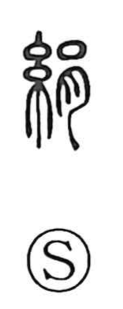

Explanation
A phono-semantic character: the silk-thread sign 糸 provides the sense of textiles, while the phonetic element 肙 guides the on-reading ken and appears in kindred graphs such as 涓 (“drops”) and others meaning an earthen chamber. The Shuowen glosses it as resembling the color of a wheat stem, so 絹 originally evoked the pale, lustrous yellow of silk and by extension came to mean silk itself. Early graphic forms even echo the source of the material, resembling a silkworm with its mouth open as if extruding thread; tortoise plastron and bone inscriptions depict a silkworm on a mulberry leaf, showing that by the Yin (Shang) period, several millennia ago, sericulture was already practiced and silk was being produced—an indigenous achievement of East Asia.